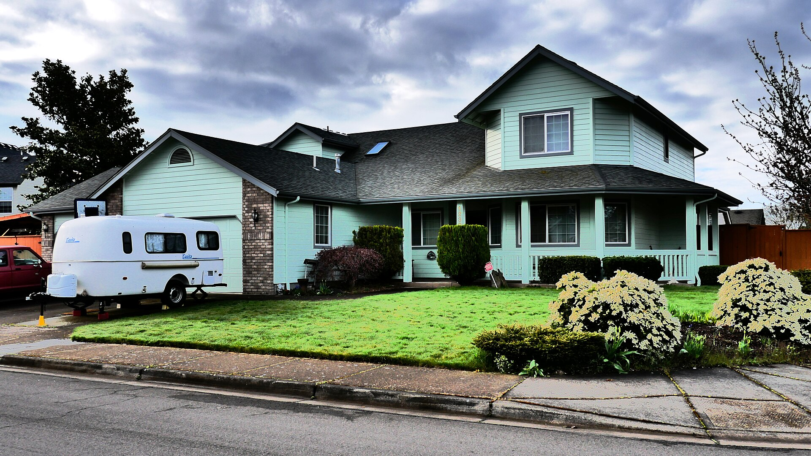

Anyone can send you listings. The job is knowing which of them are actually worth your Saturday, what the inspection is likely to turn up before you spend $600 finding out, and what the house two streets over sold for last month.

Most people start by looking at houses. That is the fun part, so it is understandable, but it is backwards. Start with the lender conversation, because your real number is almost never the number in your head. Some people find out they can do more than they thought. Some find out they need six more months. Both of those are useful. Neither one is a surprise you want in the middle of a negotiation.
While you are checking whether your couch fits, I am in the crawlspace access, looking at the water heater date, checking which way the ground slopes away from the foundation, and figuring out whether that fresh paint in the corner of the garage is decorating or covering. None of that means walk away. It means we go in with a number that reflects the house instead of the listing photos.
Price is one lever. Closing timeline, repair terms, earnest money, how you handle the appraisal, and how fast your lender can perform are all levers too, and in a lot of Lane County deals they matter more. I have seen clean, well-structured offers beat higher ones because the seller believed they would close. That belief is something you build on purpose.
You get the list. Plumber, electrician, HVAC, the guy who actually shows up for gutters, the septic company worth calling. Buying the house is the transaction. Living in it is the point, and the first year is a lot smoother when you are not searching for a contractor at 9pm on a Sunday.
Less than most people assume. The twenty percent figure is the single most expensive myth in real estate. There are loan programs that start considerably lower, and Oregon has down payment assistance on top of that for buyers who qualify. Talk to a lender before you talk yourself out of it.
Yes, and not just because sellers want to see it. Pre-approval tells you what you are actually working with, which changes which neighborhoods and which house types are on the table. It is a free conversation and it takes about twenty minutes.
Buyer agent compensation is negotiated and spelled out in writing before we tour anything. I will walk you through exactly how it works in your specific purchase, in plain language, before you sign a thing. No surprises at the closing table.
From accepted offer to keys is commonly thirty to forty-five days depending on your loan. The search itself varies enormously. Buyers who are clear on what they want and pre-approved often find it in a few weekends. Buyers still figuring it out take longer, and that is fine too.
Every Lane County area I serve has its own page for this.
Buying your first place, selling acreage out east, or landing here from out of state — start with a conversation. No pressure, no script, no disappearing act.
541-968-9422